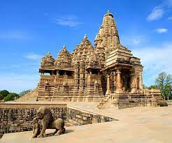
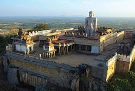

7 wonders of India
India boasts of diversity in topography, heritage, culture, language, and ethos. The country is known for its rich & inspiring historical tales and heroes. The historical monuments of India speak greatly of these historical tales and have also given us the Seven Wonders of India.
Image gallery
Taj Mahal

Taj Mahal, the white marble mausoleum in Agra, was built by the Mughal emperor Shah Jahan to iconize his love for his wife Mumtaz Mahal. This marvelous masterpiece is regarded as one of the World Heritage Sites and showcases Islamic artwork.
Khajuraho

Khajuraho is one of the selected Seven Wonders in India, known for its cluster of marvelous Hindu & Jain temple structures and their jaw-dropping statuettes. The spectacular artwork and sculptures depicting supreme romance and eternal love is not only acclaimed in India but also worldwide.
Golden Temple

Harmandir Sahib, more popularly known as the Golden Temple and Durbar Sahib, is the holiest shrine of Sikhism. Adorned inside and out with sections from the Holy Granth Sahib, it is one of the most popular religious places in India. The gold-plated structure showcases copper domes and sparkling white marble walls, reflecting Islamic-style floral patterns. Its serenity & the charm of the place, clean & hygienic ambiance, and spiritual solace have made it one of the extremely popular wonders in India.
Hampi

- Located by the banks of the river Tungabhadra in Karnataka.
- Hampi is one of the most famous historical places in India.
- Hampi is known for its historical ruins and relics of the grand Vijaynagar Kingdom
konark temple

- Sun Temple, located at Konark in coastal Orissa.
- It is a cluster of ancient temples with stunning artwork & sculptures.
- The three statues of Sun God where the sun rays fall on dawn, noon, & dusk and the sundial with 12 wheels pulled by seven horses depict the time of the day
gomateshwara

Gomateshwara is a monolithic statue, dedicated to God Baahubali of Jain religion. Located in Shravanabelagola in Karnataka.The temple hosts the Mahamastakabhisheka festival that happens once in 12 years. During this celebration, the figurine is washed and polished with milk, saffron, and ghee to maintain the shimmer & luster of the rock.
nalanda

Nalanda, located near Patna, is one of the ancient education centers in India. This is one of the oldest universities in the world. It is believed that students from China, Tibet, Persia, and Greece traveled up to here to attain education and enhance learning skills.
Link to gemini solution